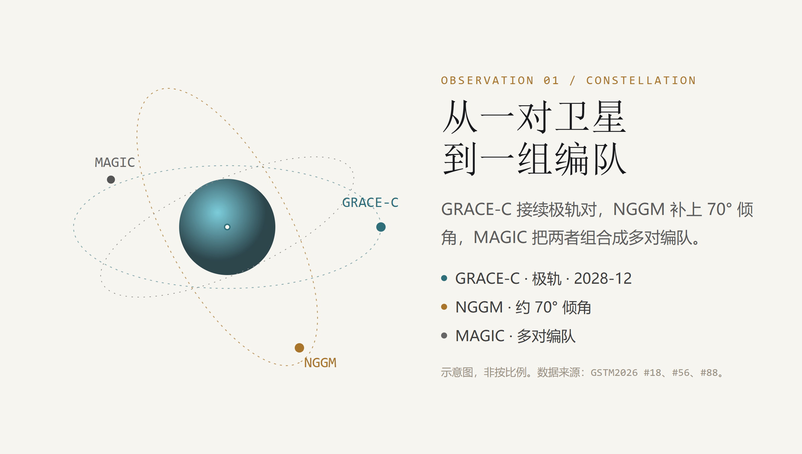
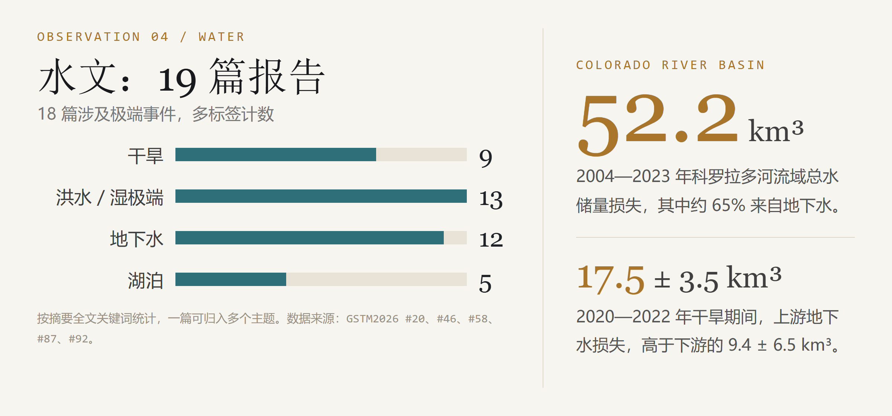
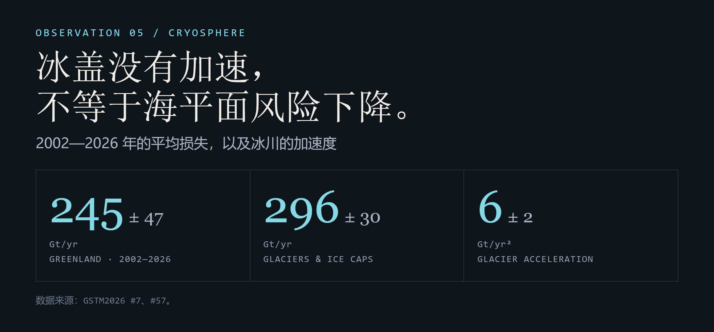
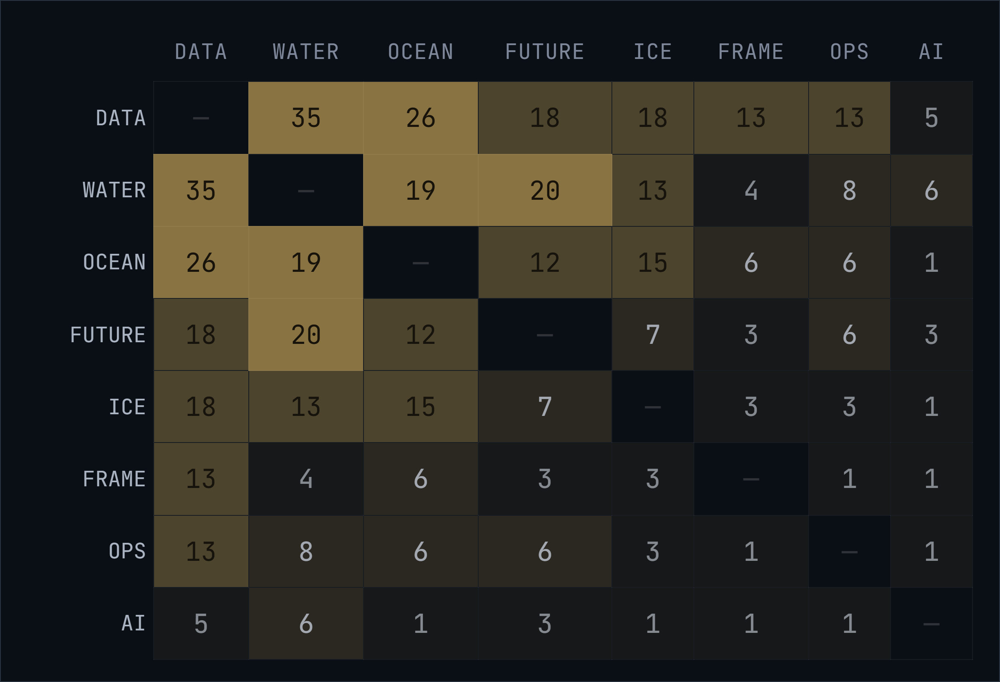
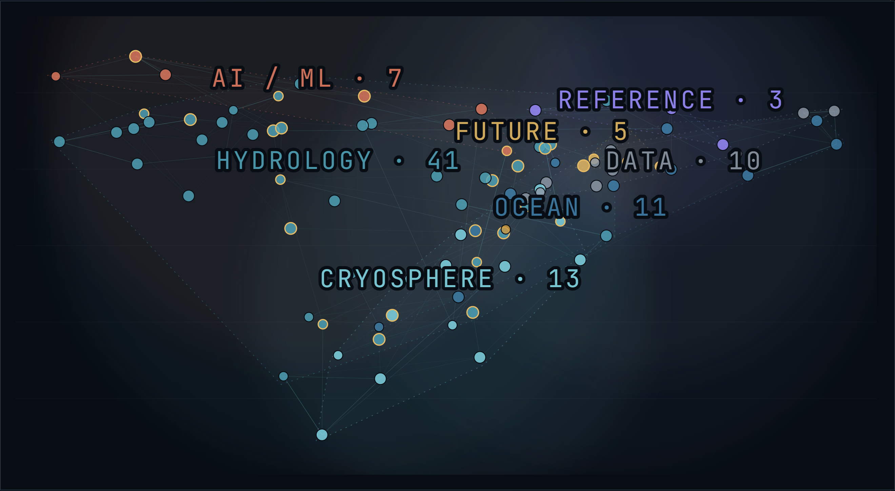
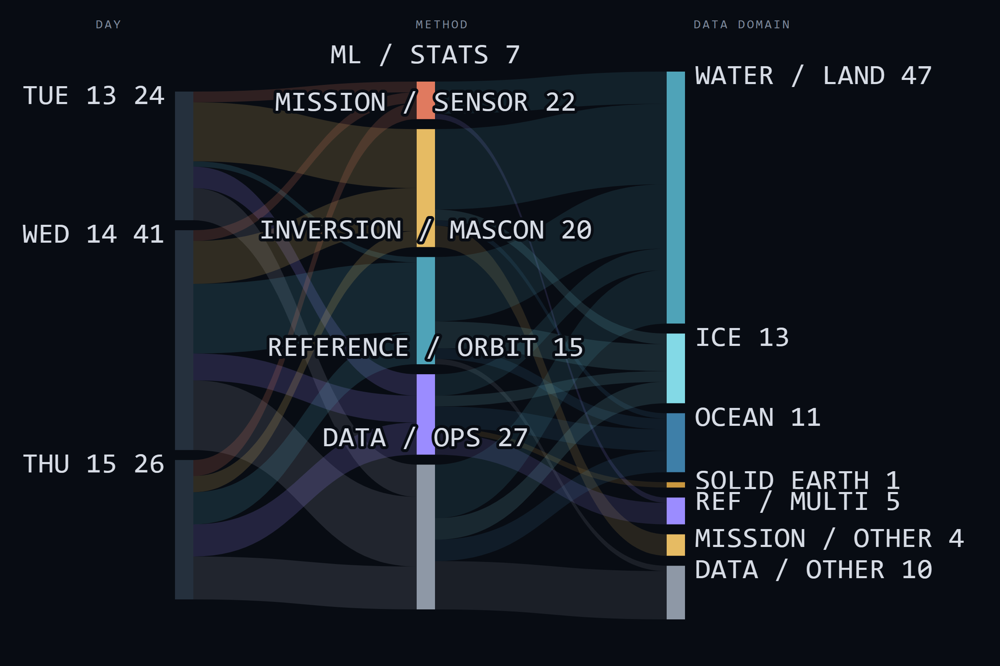

2026 年 10 月 13 日到 15 日，德国波茨坦，GFZ（亥姆霍兹地球科学中心）的一栋楼里开了三天会。172 个人（现场 91，线上 81），91 篇报告。会议名字很长：GRACE/GRACE-FO Science Team Meeting，简称 GSTM2026。
现在，我们把 10 个分会场的页面、91 篇摘要和议程翻了一遍，想知道两件事：GRACE-FO 之后怎么办，以及这些数据现在被谁用、怎么用。
文中的 #88、#56 是会议摘要编号，对应 DOI 可以在文末找到。
先解释一下 GRACE 在测什么。
GRACE 的原理不复杂。两颗卫星一前一后绕地球飞，相距大约 220 公里，用微波或激光测距。地球表面的质量分布发生变化，引力场就会变，两颗卫星的距离也会跟着变。把这些距离变化反演成重力场，就能算出水、冰、大气和固体地球的质量迁移。
从 2002 年 GRACE 发射，到 2018 年 GRACE-FO 接续，这条记录跨了 22 年。中间有 11 个月的空档：GRACE 在 2017 年结束，GRACE-FO 到 2018 年才接上。
对研究长期趋势的人来说，这已经够长；对下一代任务来说，问题则是另一个：下一对卫星在哪里。
01 / CONSTELLATION
下一代任务：从一对到一组
A.3 有 18 篇报告，3 小时 09 分，是未来任务最集中的一场。主题是 GRACE-C、NGGM 和 MAGIC。
GRACE-FO 目前仍在轨。它的接续任务 GRACE-C（GRACE-Continuity）由 NASA 与 DLR（德国航空航天中心）联合研制，计划 2028 年 12 月发射。#88 报告了进展：卫星已经进入总装、集成与测试，激光测距干涉仪、加速度计、GNSS 接收机和星相机正在集成。
ESA（欧洲空间局）的 NGGM（下一代重力任务）选择了大约 70° 的倾角。极轨卫星在南北极附近采样密，在中低纬采样疏；倾斜轨道可以补上这一段。MAGIC 把极轨的 GRACE-C 和倾斜的 NGGM 组合成多对编队，目标是把产品周期从月缩短到 10 天，甚至 5 天。

图 1 · GRACE-C、NGGM 与 MAGIC 的编队关系。示意图，非按比例。数据来源：GSTM2026 #18、#56、#88。
#56 用 10 天尺度的亚马逊流域 TWS（陆地水储量）做了一次区域反演：在 220 公里和 165 公里的空间尺度上，NGGM 能恢复大约 80% 和 65% 的信号，比 GRACE-C 提高 15—20%。
围绕传感器和编队，会上还出现了几条技术路线：冷原子干涉加速度计、光机惯性传感器、光钟频比测距，以及目标 8U 以下、6 公斤以下、20 瓦以下的小卫星激光测距载荷。GRATTIS 计划 2027 年 2 月飞行，验证简化引力参考传感器 S-GRS，目标加速度噪声不高于 10⁻¹⁰ m/s²/√Hz。
这些内容偏工程，但都指向同一个问题：单对卫星的采样，能不能支撑未来十年更快、更细的水变化监测。A.3 的 18 篇报告，大多在回答这个问题。
“在 220 公里和 165 公里的尺度上，NGGM 能恢复约 80% 和 65% 的 10 天 TWS 信号。”
02 / MACHINE LEARNING
机器学习开始处理重力数据
91 篇摘要有 7 篇用了机器学习或深度学习。数量不多，做的事都很具体：
用 MLP、LSTM、BiLSTM 做加速度计移植，减少未来任务需要的物理传感器；用深度网络把水、冰和噪声分开；用 U-Net 把 NGGM/MAGIC 的 3° 模拟场降到 1°；用随机森林补 GRACE 的缺测，再降到 0.1°；用机器学习给 GRACE-C 的 3 天 quicklook（快速解）做质量筛查。
这些工作大多会在重力场层面评估误差，预测精度只是其中一项。多数模型还加了物理约束。#78 的 dual-stream 架构在月度分支施加全球质量收支投影，日度分支用 Student-t 似然处理重尾残差；#66 把去噪和信号分离合成一步，再和 GFZ GravIS 产品对比。
从这些报告看，机器学习现在承担的是反演、校准、补缺和质检。物理模型仍然是主体。
“这些工作大多在重力场层面评估误差，预测精度只是其中一项。”
03 / OPERATIONS
重力数据进入日常使用
今年有 15 篇摘要讨论这些数据怎么进入气候服务、早期预警和日常管理。
Copernicus C3S（哥白尼气候变化服务）把“Terrestrial Water Storage and Groundwater”做成了 Essential Climate Variable（ECV，基本气候变量）服务，交付 TWSA（陆地水储量异常）和 GWSC（地下水储量变化）的 Climate Data Record（CDR，气候数据记录）、数据文档包和不确定性说明，放在 Climate Data Store 上（#97）。
CNES（法国国家空间研究中心）和 Magellium 的 SAGSA 把 L2—L4（二级重力场到四级应用产品）的生产链自动化，按月或半年更新，分发到 DATATERRA 的数据枢纽（#70、#21）。SAGSA 也在为 MAGIC-NGGM 做运营准备。
月产品一直是标准节律。现在多了 CNES 的 10 天解、GFZ 的日解，以及 GRACE-C 预期的 3 天 quicklook。
TWO NUMBERS
2 mm SAGSA 全球大气质量改正，把 2016—2026 年海平面收支残差减少了约 2 mm。
3 天 GRACE-C 预期的 quicklook 时延，用于更快的质量筛查。
数据发出去只是第一步。用户还需要知道每个月什么时候更新、误差多大、这批数据适合做什么。
C3S 在报告里提到一个难点：GRACE 的时空尺度上缺少足够的原位观测，质量只能靠质量守恒、流域闭合、与水文模型和井水位对比，一项一项说明。
2 mm 不算大，不过它会影响海平面收支的闭合。
04 / WATER
水文是最大的应用方向
B.4 水文是今年最大的应用 session，19 篇报告。18 篇谈极端事件：干旱 9 篇、洪水/湿极端 13 篇、地下水 12 篇。
2020—2022 年干旱期间，上游地下水损失 17.5 ± 3.5 立方公里（km³），高于下游的 9.4 ± 6.5 km³（#58）。全流域总水储量损失 52.2 km³，其中约 65% 来自地下水（#92）。Rio Grande—Bravo 的地下水消耗为 2.7 km³/yr，52% 的直接人为用水不可持续，农业占直接消耗的 87%（#92）。

图 2 · 水文 session 的极端事件计数，以及科罗拉多河流域的两组数字。数据来源：GSTM2026 #20、#46、#58、#87、#92。
这些数字来自 GRACE/GRACE-FO 的观测反演，辅以水文模型、水库记录和用水数据。
产品的时间和空间分辨率也在提高。14,071 个全球湖泊被逐月重建，65% 的 3° mascon（把地表划分为质量块的反演单元）受湖泊水量影响（#46）。10 天 GRACE-DSI（GRACE 干旱指数）能识别 2010—11 拉尼娜和 2022 年法国干旱（#20）。日尺度 25 公里的降尺度产品，用 22 年大气河和 104 次热带气旋事件做了验证（#78）。
#87 把 23 年的 L1B 距离观测叠加（stacked L1B），把 TWS 趋势解析到约 12,500 km²，并在 40 个区域把趋势归因到灌溉、地下水开采、毁林和水库蓄水。
如果下一代任务的 5 天/10 天产品能够稳定运行，重力观测就可以用于洪水这类快速事件的监测。这是水文和灾害社区今年提得最多的需求。
05 / CRYOSPHERE
南极的“增重”，可能来自降雪
2019—2024 年，南极冰盖的质量损失放缓。表面看，像是趋势反转。#7 把原因指向热带暖池：持续增温激发向极传播的罗斯贝波列，在东南极上空形成高压异常，带来更多降水。这轮增重与 2004—2007 年的事件在量级和持续时间上接近，属于表面物质平衡的年际变化。
格陵兰在 2012 年后因连续冷夏出现损失放缓，但 2002—2026 年平均损失仍有 245 ± 47 Gt/yr（十亿吨/年）；全球冰川 296 ± 30 Gt/yr，加速度 6 ± 2 Gt/yr²（#57）。

图 3 · 格陵兰、全球冰川与冰川加速度。数据来源：GSTM2026 #7、#57。
冰盖没有加速，不等于海平面风险下降。年际变化会掩盖十年尺度趋势，这也是重力任务需要继续飞、并且飞得更久的原因。
06 / PRODUCTS
产品本身成了研究对象
今年有 18 篇摘要提到再处理、新版本或新产品。
GFZ 将在 2026 年第四季度发布第 7 版重力场产品 RL07。它重做了随机模型、观测相对 weighting，并把非潮汐背景模型误差协方差纳入解算（#23）。
COM-TG 把四家分析中心的产品放在统一反演框架里融合，用海岸线/接地线分辨率改进处理陆海信号归属（#74）。Hawk L1C 公开 K 波段测距残差（KBRR）、视线重力差、法方程和校准加速度计，覆盖 2002—2026，即将上架 Zenodo，让 L1B 到 L2（一级观测到二级重力场产品）的链条可以复现（#68）。
产品之间的差异已经小到和信号本身可比，比较这些差异就成了工作的一部分。再处理、组合、不确定性传播和版本说明，直接影响气候服务是否采用这些产品。
07 / STRUCTURE
91 篇摘要里的结构
把 91 篇摘要放在一起，还能看到几个单篇报告里不明显的结构。下面三张图分别看主题怎样交叉、论文在语义空间里怎么聚、以及三天、方法和数据域之间怎么流动。
先看主题共现。68 篇提到数据产品，其中 35 篇同时谈水文，26 篇谈海洋，18 篇谈冰冻圈。数据产品更像一条穿过所有应用方向的线：做水、做冰、做海洋的人，都在处理版本、误差和融合。

图 4 · 主题共现矩阵。行与列交叉 = 同时提到两个主题的论文数。数据来源：91 篇摘要的标签。
第二张把每篇论文放进同一个语义空间。位置越近，题目和摘要越相似；颜色是主导主题，金色描边是提到未来任务的论文。水文在左边聚成一团，冰冻圈在下，海洋和未来任务在右中，参考框架在右上。

图 5 · 91 篇论文的领域地形图。题目、摘要、主题标签、方法和数据词 → TF-IDF → 余弦相似度 → PCA 投影。28 篇提到未来任务，其中 20 篇同时谈水文。
第三张按天汇总，再看方法。三天分别是 24、41、26 篇。具体到 session，A.3 的 18 篇里，15 篇归入任务/传感器，14 篇落到水/陆地；B.4 的 19 篇全部落到水/陆地，方法却分散在反演 7、数据/业务 5、机器学习 3、任务 2、参考 2。同一个应用方向，并不是只用一种方法。

图 6 · 三天 → 方法 → 数据域。每篇论文按主导方法和数据域归入一类，流宽 = 论文数，总和 91。
这三张图都来自摘要文本的二次统计，不是新的观测。它们能说明这批报告在谈什么、用什么做，但不能代替对单篇论文的判断。
ENDING / THREE DATES
三个日期
会开完了，没有统一结论。能确定时间的，只有三件事：
2026 Q4
GFZ RL07 发布
第 7 版重力场产品，新的随机模型与权重。
2027-02
GRATTIS 飞行
验证下一代引力参考传感器 S-GRS。
2028-12
GRACE-C 发射
接续极轨对，继续 22 年的质量变化记录。
这三件事，大体上决定了 2030 年代重力观测的节奏。
下次再看到“GRACE 发现某地地下水减少”的新闻，可以多问一句：用的是哪一版产品？多长周期？误差多大？这些问题没有统一答案。91 篇报告里，至少有一批人在处理其中一部分。
本文数据来自 GSTM2026 官网（https://www.gstm-2026.eu/）和 Copernicus Meeting Organizer（https://meetingorganizer.copernicus.org/GSTM2026/）的公开摘要与议程。会议共收到 95 篇摘要，4 篇撤稿，91 篇进入日程；172 人参会，其中现场 91 人、线上 81 人。引用编号对应 https://doi.org/10.5194/gstm2026-{编号}。摘要 © 各作者，按 CC BY 4.0 许可使用；会议名称与标识归 GFZ / Copernicus 所有。